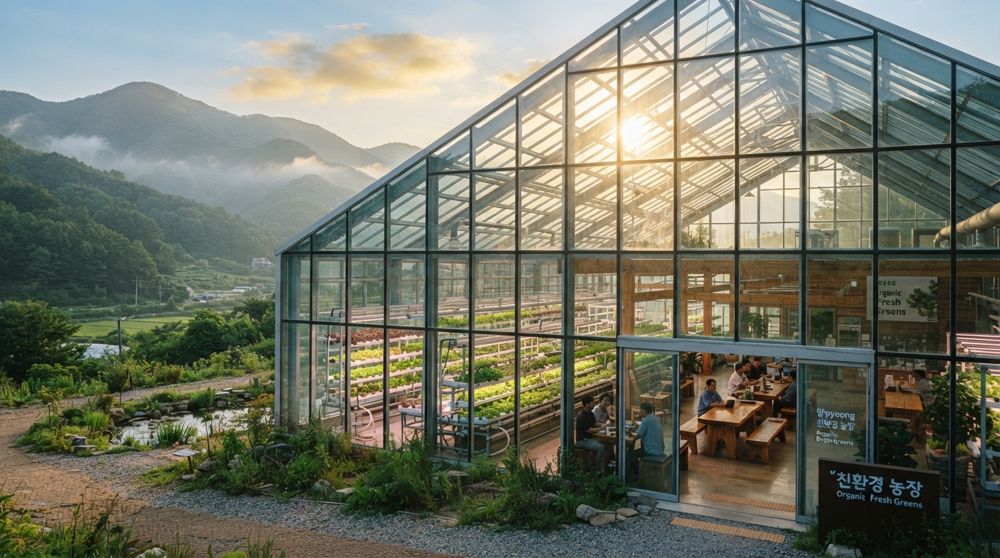
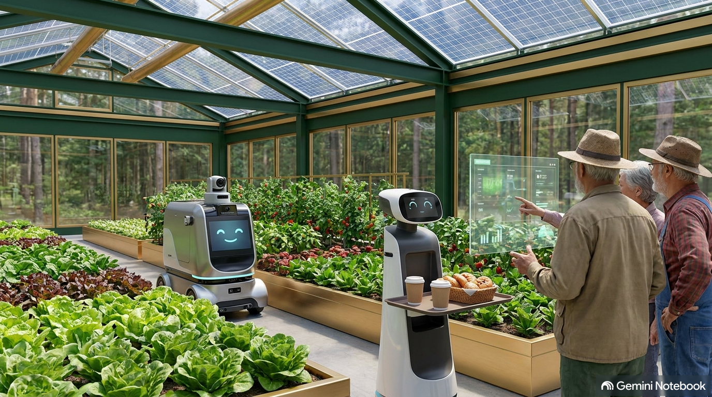
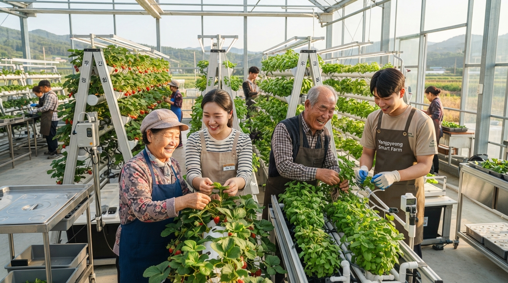
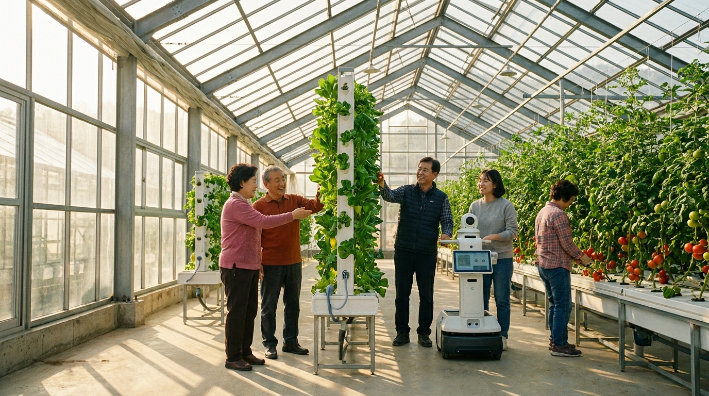
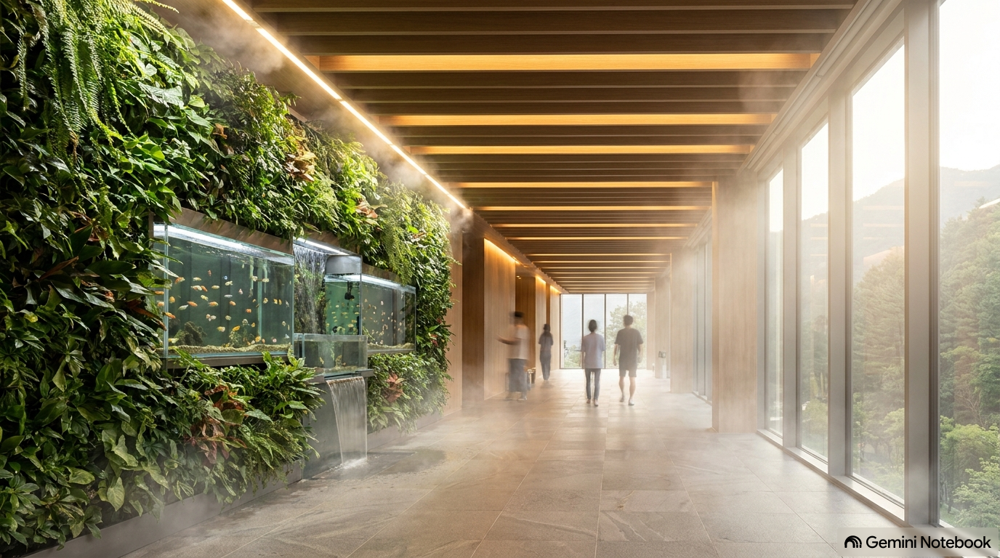
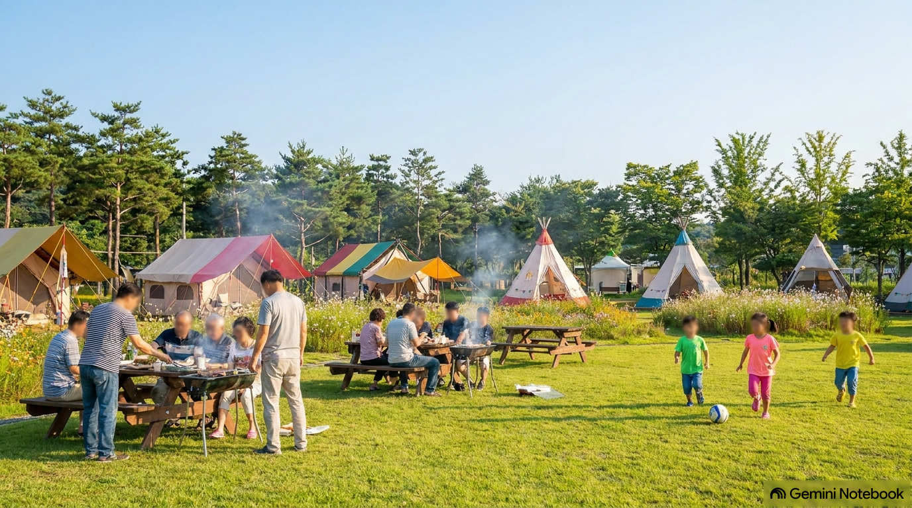

지상천국(地上天國),
양평 대지 위에 짓다
요양원 유휴 부지의 역사적 환원 — 첨단 6차 스마트팜과 영성 치유, 노소 상생이 융합된 전국 최초의 지속가능 자립 공동체 모델.
우리가 구현할
지상천국의 3대 핵심 축
자연 순환 생태계와 자립형 경제를 결합한 미래형 마스터플랜
세대 상생 자립 복합 공동체
시니어의 연륜과 청년의 첨단 IT 기술력을 융합한 자립 협동 주거 모델입니다. 요양원 본관 시설을 리모델링하여 세대 통합 교육 및 안전한 힐링 주거를 제공합니다.
첨단 6차 스마트팜 테크놀로지
ICT 사물인터넷 정밀 환경제어, 버티컬 수경재배, 무화학 아쿠아포닉스 순환 설비로 사계절 고부가 채소를 균일하게 수확하여 재단 기금의 안정성을 확보합니다.
온실 치유 카페 & 로컬 상생 마켓
보태니컬 정원 카페, 팜투테이블 베이커리, 직판 로컬 마켓을 통해 도시민과 지역 주민이 찾아오는 양평의 대표 생태 랜드마크로 확장합니다.
사업 부지 실측 및 입지 정밀 검증
양평군 여양2로 소재, 지적 실측 3종 도면 데이터


안전진단 통과 골조를 완벽 보존·재생하여 신축 대비 약 42%의 건축비 절감 및 9개월 이상의 인허가·공기 단축 효과를 완성합니다.
첨단 스마트팜 4대 혁신 현장
연중 무휴 기후 무관 정밀 환경제어 실사

사진 1 / 4 smart_toy 세대 통합 AI 스마트팜AI 협동 로봇 & 세대 상생 온실
노동력 70%↓어르신 조합원과 청년 농업인이 함께 파종·관리하며, 자율주행 모바일 로봇이 수확 상자 운반과 모니터링을 전담합니다.

사진 2 / 4 nutrition 수직 타워 & 고당도 과채버티컬 타워 & 사계절 딸기
생산성 500%↑스테인리스 모듈형 수직 타워에서 유럽형 샐러드 채소와 고당도 무농약 딸기를 허리 굽힘 없이 손쉽게 수확합니다.
 사진 3 / 4
water_drop 자연순환 아쿠아포닉스
사진 3 / 4
water_drop 자연순환 아쿠아포닉스
생태 아쿠아포닉스 유기 순환
100% 무화학비료친환경 담수어 양식 수조의 유기물이 미생물 여과를 거쳐 상부 채소의 천연 영양분이 되는 완전 무항생제 생태 순환 설비입니다.

사진 4 / 4 terminal 지능형 텔레메트리 관제AI 생육 진단 & 원격 모니터링
빅데이터 최적화투명 디스플레이와 AI 분광 센서가 일조량, 습도, 양액 농도를 24시간 분석하여 최적의 생육 환경을 자동 유지합니다.
기존 요양원의 품격 있는 재탄생
폐쇄적 병동에서 바이오필릭 주거 힐링 라운지로
 사진 1 / 3
nature_people 수직 식물벽 바이오월 회랑
사진 1 / 3
nature_people 수직 식물벽 바이오월 회랑
천연 음이온 산소 힐링 라운지
공기청정 99%벽면 전체를 덮는 천연 식물벽과 잔잔한 폭포 수경시설을 통해 미세먼지를 차단하고 숲속 피톤치드 산소를 상시 공급합니다.

사진 2 / 3 door_front 독립 주거 스위트 (36세대)친환경 원목 맞춤형 주거 유닛
편백·황토 시공기존 4~6인실 다인실을 쾌적한 원목 테라스형 독립 주거로 개조하여 어르신의 사생활 보장과 따뜻한 이웃 교류를 동시에 실현합니다.
 사진 3 / 3
spa 통창 파노라마 산림욕장
사진 3 / 3
spa 통창 파노라마 산림욕장
사계절 숲을 품은 아쿠아 테라피
산림 조망 100%양평 잣나무 숲을 한눈에 감상할 수 있는 통창 회랑에 천연 미스트 장치와 온천수를 연계하여 어르신들의 관절 치유를 돕습니다.
자연 속 치유 야외 공간 & 캠크닉
개울과 숲이 어우러진 3대 가족 힐링 플레이스

사진 1 / 4 outdoor_grill 3대 가족 가든 바비큐유기농 바비큐 & 글램핑 캠프
주말 방문 명소마을 온실에서 수확한 신선한 채소와 건강한 식재료로 조부모, 자녀, 손주 3대가 둘러앉아 친교를 나누는 열린 식탁입니다.
 사진 2 / 4
hiking 연꽃 연못 & 어싱 황톳길
사진 2 / 4
hiking 연꽃 연못 & 어싱 황톳길
400m 순환 맨발 어싱(Earthing)
자연 면역 치유맑은 계류와 연꽃 생태 연못을 따라 조성된 촉촉한 붉은 황톳길을 맨발로 걸으며 체내 염증 완화와 마음의 평온을 얻습니다.
 사진 3 / 4
park 넓은 잔디마당 팜크닉
사진 3 / 4
park 넓은 잔디마당 팜크닉
어린이와 함께하는 자연 놀이터
세대 융합 체험자유롭게 뛰어놀 수 있는 천연 잔디 광장과 인디언 텐트존에서 도시 아이들에게 흙의 소중함과 자연의 생명력을 전합니다.
양평의 랜드마크 유리온실
친환경 건축미학수려한 양평 산세와 어우러지는 아치형 유리온실과 카페가 결합되어 연간 15만 명 이상의 방문객을 맞이합니다.
천도교 재단 이사회 사업수지 요약
자립형 공동체 운영을 통한 재단 자산가치 극대화
단계별 4단계 추진 로드맵
철저한 인허가 검증과 단계별 자립 재무 확립 플랜
실측 지적 기반 농지·복지시설 용도 정비, 천도교 유지재단 이사회 최종 승인 및 특수목적법인(SPC) 발족.
골조 안전진단 보강, 36세대 주거 유닛 전환, 바이오월 회랑 및 온실 기초 토목·관수 배관 완공.
수경재배 타워 및 아쿠아포닉스 설비 1,000평 가동, 공동체 조합원 1기 입주 및 온실 정원 카페 프리오픈.
로컬 마켓 및 글램핑 파크 공식 개장, 조합원 자립 배당 실현 및 2단계 온실 증축으로 전국 선도 모델 안착.
재단 이사회 & 참여 문의
상세 사업타당성 보고서(PDF) 및 현장 실사 브리핑을 원하시면 아래 양식을 접수해 주십시오.